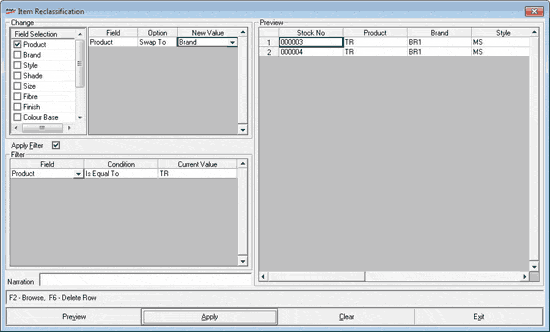

This option provides facility to reclassify item details after the item master is ready for transactions or any time after your business operations have started.
Primary use of this option is to correct the mistakes identified after item master creation. However, as part of changing requirements, this may be used for merging data of different classifications or splitting classifications.
How to reach: Setup > Supervisory Functions > Item Reclassification
The Item Reclassification window is displayed.

Change:
Field Selection: Select the fields in which classification changes are required. The display list is preconfigured.
Field: Displays the fields selected under Field Selection.
Option: Select either Change To or Swap With. The option Swap With is allowed only in the case of some fields. Change To allows you to specify a new value for the selected field. Swap With allows you to exchange the value of the current field with another field of the same data type.
New Value: Enter the value that the field should contain after the reclassification is done. If you have selected Change To, enter a fixed value. In case you have chosen Swap With, select a field name from the list with which the value of the current field has to be exchanged.
Apply Filter: Select, if you want to change the classification only for a selected set of items.
Field: Select the field based on which data has to be filtered.
Condition: Currently you can select only Is Equal To.
Current Value: Select the value for the field, to select matching records. You may press F2 to open the Browse window and select a value.
Narration: Enter description/ reason of the reclassification.
Preview: Item master records matching the specified filter conditions are displayed. This is generally used for verification purposes before applying the changes.
F2: To open the Browse window to select field values in the Filter grid
F6: To delete rows in the Filter grid